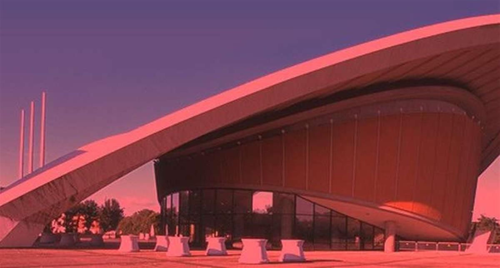
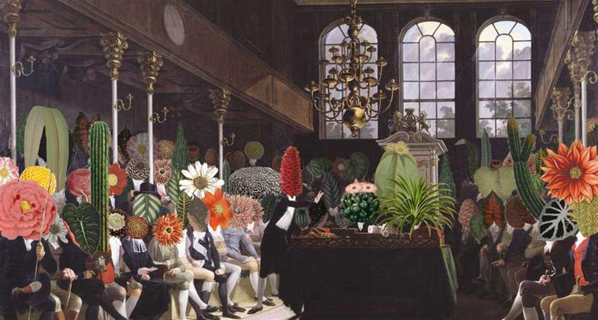
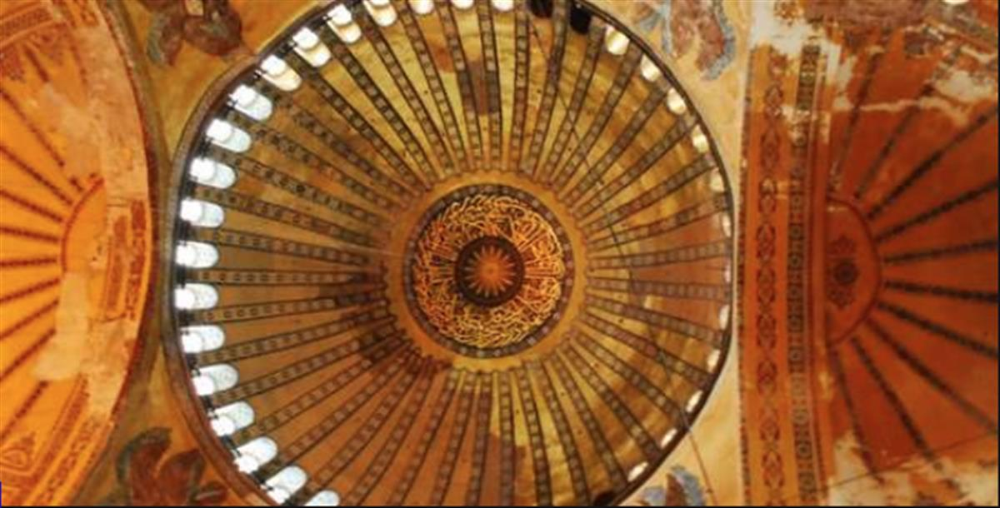

Who we are
The Future Architecture platform is a well-balanced ecosystem of European cultural players in architecture who perform specific roles within a complex European architecture program. It connects multi-disciplinary emerging talents to high profile institutions like museums, galleries, publishing houses, biennials, and festivals. It provides talented conceptual thinkers and practitioners in architecture with opportunities to speak up - and be seen and heard.
26
Architecture institutions
22
European countries
What we do
Call for Ideas is much more than a competition. It is an invitation to register ideas and help shape the most groundbreaking architectural happenings and events that form the core of the European Architecture Program. You can apply in November and be selected to participate at the Creative Exchange in February.
Creative Exchange is the most insightful annual gathering of architecture lovers and professionals, and is held every February in Ljubljana. It brings together platform members and 25 of the most progressive emerging talents selected through the Call for Ideas. It offers opportunities to connect and keep up with the latest developments and tendencies in architecture.
European Architecture Program is a series of the most significant and interconnected architectural happenings and events in Europe.
Archifutures is an innovative digital/analogue publishing hybrid that brings together the possibilities of critical editorial work, innovative printing and active user intervention.
SOURCE: THE FUTURE ARCHITECTURE PLATFORM


